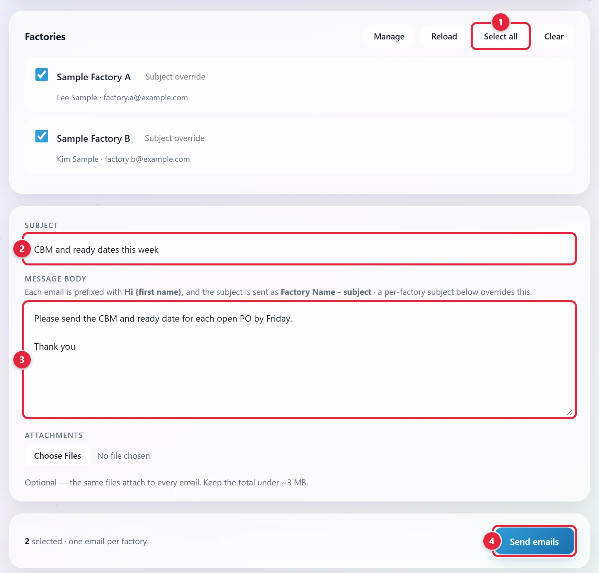
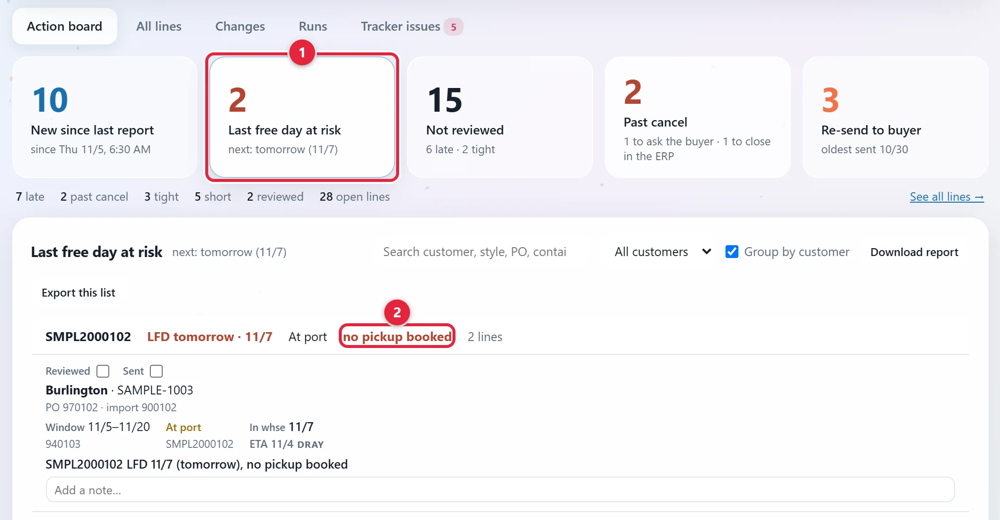
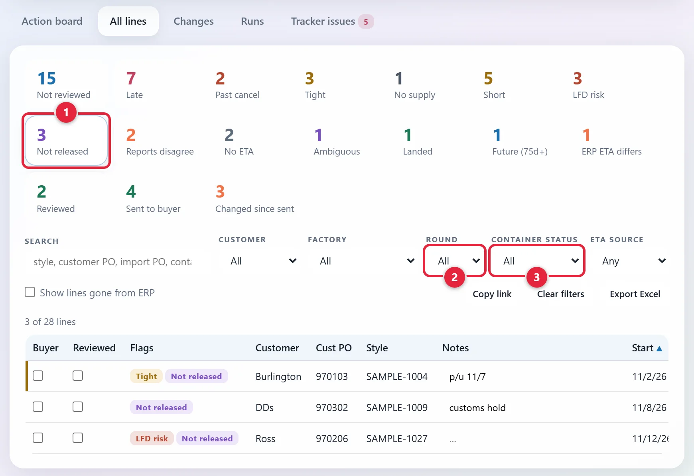
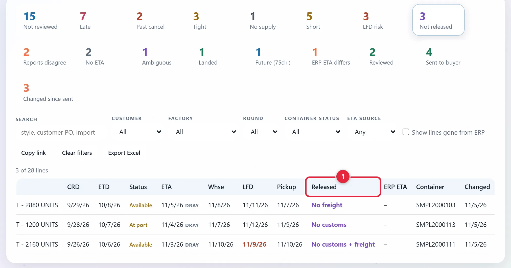
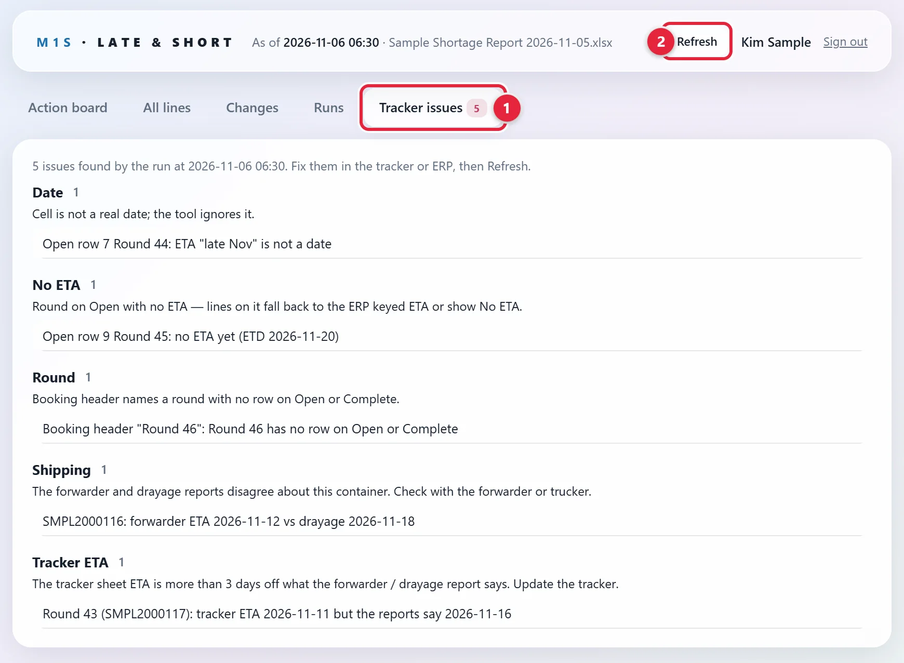
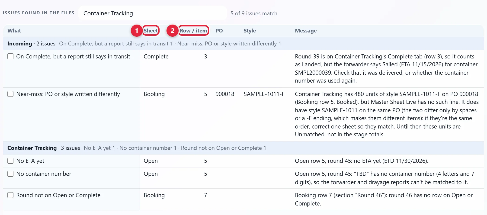

Container Planning & Logistics
Use the Container Tracking Sheet to plan containers, collect ready dates, track shipping documents and close out each round.
Draft. The tools confirm the Booking, Loaded, Open and Complete tabs.
Saul to confirm 9 things
- What to type in P.L/ C.I., Sent Docs Forwarder, telex and FDA Released. No tool reads the first three. The tools read FDA Released only as text.
- The Incoming Orders and PO Status tabs, which no tool reads either, and what first-sale, open-order flags and NB mean.
- How a container gets booked: who does it, with which company, and what they need.
- How the next round number is picked.
- Who adds the Round row on Master Sheet Live after the ship sails.
- Who watches Late & Short, how often to check the Last free day at risk card, and who gets a pickup booked when a container is near its last free day, with which trucker.
- What to do with a Not released line, and who to ask.
- That Factory Emailer is how the weekly ask for CBM and ready dates goes out.
- The order of the steps under Plan and book a container, which comes from how the tools read the sheet, and that Booking has a Need by column as Loaded does.
Jump to: Open the sheet · Plan and book · Track documents · Watch containers at port · Fix what the tools flag · Close out a round · Rules · Reference
Open the sheet
Screenshots use made-up sample data. Click any picture to see it larger. This page is public, so a few names in the pictures are changed or left out. The tool shows the real ones. The sheet's tabs are drawn, because the real workbook holds live orders. Scroll a drawn table sideways if it doesn't fit.
-
Click the Container Tracking chip
Click Open Shalam Tool above. Sign in with your Metro1 Microsoft account if it asks. Then click the Container Tracking chip near the top 1. The workbook opens on SharePoint in a new tab.

-
Go to the tab for your job
The tabs are along the bottom of the workbook.
Tab What it's for Booking What is booked, per round. Loaded What is loaded, per round. Same layout as Booking. Open Live tracking board: documents, release, ETA. One row per container. Complete Closed shipments, archived. Same columns as Open. Incoming Orders Each order's start ship, cancel and ready dates (CRD), its ETA and any extensions. PO Status A tab in this workbook, not the PO Status Tracker. Factory contacts, open-order flags and first-sale. See the yellow Draft note at the top.
Plan and book a container
-
Open Master Sheet Live
In the Shalam Tool, click the Master Sheet Live chip. It's in the top row of chips. The file opens on SharePoint in a new tab. Find the item's lines by Po Number or Style Number.
-
Add the lines to Booking
Go to the Booking tab of the Container Tracking Sheet. Add the lines under a planning section. Lines not booked yet sit there.
Fill in the columns drawn below, as far as you know them. Type PO Number and Style exactly as they are on Master Sheet Live. If they differ, the tools can't match them.
Category Style Quantity PO Number Company CBM Ready Date Need by Round 44 Body Care SAMPLE-1001 4,800 900125 Sample Factory A 6.2 11/20/2026 Dec Body Care SAMPLE-1002 2,400 Skin Care SAMPLE-1003 3,600 900126 Sample Factory B 4.8 11/26/2026 Dec Round 45 Lip SAMPLE-1009 1,200 900127 Sample Factory A 1.5 12/16/2026 Jan A planning section Body Care SAMPLE-1004 2,880 900128 Sample Factory B Jan Drawn layout with sample data, not a screenshot. The sheet has more columns, listed under Reference. -
Ask the factories for CBM and ready dates
Do this every week. CBM is the cargo volume in cubic meters. Factory Emailer sends one message to many factories, one email each, from your own mailbox. Saul to confirm this is how the ask goes out.
- Click Open Tools Hub above, then the Factory Emailer tile.
- Tick the factories, or click Select all 1. A factory with no email isn't listed until it has one. See Add a factory or change its email.
- Fill in Subject 2 and Message body 3. Add Attachments if you need them, under about 3 MB in all.
- Click Send emails 4. Each subject reads Factory Name - your subject. Each email opens with Hi and the first name.
- Each factory then shows SENT or FAILED. The last line says how many went and how many failed.

Enter what they tell you in CBM and Ready Date.
Type the Ready Date on the PO's first row, the one with the PO Number. The tools don't read a date on the style rows under it.
Keep Ready Date current. The Shalam Tool uses it first when it works out a line's ready date.
-
Plan the container
Compare what's ready (Ready Date) with what's needed (Need by). Consolidate: put goods that can ship together into one container.
Goods can be booked once carton marks, batch numbers, tickets, PI and inspection are confirmed. Those checks are in Production & PO Tracking and Inspection.
-
Book the container (draft)
Saul to confirm how a container gets booked: who does it, with which company, and what they need. Until then, ask Saul.
-
Add a Round header
A round is one shipment. On Booking, add a header row like Round 44 above. Type it in Category. Leave Style and Quantity empty. Saul to confirm how to pick the next round number. Until then, ask Saul.
-
Move the PO's lines under it
Move them out of the planning section, so no copy stays there. The PO Number goes on the first row of its lines. The style rows under it belong to that PO.
-
Add the round to Open
Go to the Open tab. Add one row per container, with the Round #. Fill in the rest as you get it. Track documents shows the tab.
-
Move the lines to Loaded
When the goods are loaded, move the PO's lines from Booking to Loaded, under the same Round header. Don't leave a copy on Booking.
Category Style Quantity Po Number Order Date Ship by Ready Date Need by Round 43 Body Care SAMPLE-1020 1,200 900104 8/20/2026 10/25/2026 10/25/2026 Dec Body Care SAMPLE-1021 1,800 Bath SAMPLE-1012 3,000 900116 8/25/2026 10/28/2026 10/28/2026 Dec Drawn layout with sample data, not a screenshot. Only some of the tab's columns are drawn. -
Add the Round row on Master Sheet Live (draft)
After the ship sails, add a row on Master Sheet Live whose Product name starts with Round, below the shipped lines. Lines above it count as shipped. Master Sheet Live: open or shipped explains this.
If the row is missing by then, the Shalam Tool lists the line as Master Sheet behind Container Tracking.
Track documents and clearance
-
Find the container's row on Open
Look for its Container # or Round #. A round with two containers has two rows.
ID# Container # Round # ETD ETA Factory PO# P.L/ C.I. Sent Docs Forwarder telex Freight released Customs Cleared FDA Released DO Sent to trucker Packing list sent to WH Notes 1 SMPL2000102 41 10/7/2026 11/4/2026 Sample Factory B 900102 10/9/2026 10/10/2026 10/28/2026 11/2/2026 11/3/2026 11/3/2026 11/4/2026 11/4/2026 Pickup not booked 2 SMPL2000103 41 10/8/2026 11/5/2026 Sample Factory C 900103 10/9/2026 10/10/2026 10/29/2026 11/3/2026 3 SMPL2000101 42 10/23/2026 11/15/2026 Sample Factory A 900101 10/25/2026 10/26/2026 4 SMPL2000104 43 11/2/2026 11/18/2026 Sample Factory A 900104 11/3/2026 5 44 11/20/2026 12/19/2026 Sample Factory A, Sample Factory B 900125, 900126 Drawn layout with sample data, not a screenshot. Scroll the table sideways to see all 16 columns.
-
Keep the ETD and ETA current
ETD is when it leaves. ETA is when it arrives. Late & Short and the Shalam Tool both read them.
-
Fill in each document as it happens
- P.L/ C.I.: the packing list and commercial invoice.
- Sent Docs Forwarder: documents sent to the forwarder, the company moving the shipment.
- telex: release without the original bill of lading, the carrier's shipping document.
- Freight released: the date freight was released.
- Customs Cleared: the date customs cleared it.
- FDA Released: whether and when FDA released the goods.
- DO Sent to trucker: the date the delivery order went to the trucker.
- Packing list sent to WH: the date the packing list went to the warehouse.
Watch containers at port
Late & Short reads the forwarder's report and the drayage report (trucking from the port) every weekday morning. It shows things the sheet doesn't, such as the last free day. More on it is in Order Tracking.
-
Check Last free day at risk
Click Open Late & Short above. On the Action board tab, click the Last free day at risk card 1. The last free day is the last day a container can sit at port with no extra charge.
Each container here is at port, 2 business days or less from its last free day, with no pickup booked by then. The red words say why 2.

-
Get the pickup booked (draft)
Late & Short books nothing. Get the pickup booked with the trucker before the last free day. Saul to confirm who does this, and with which trucker. Until then, ask Saul.
-
Check what isn't released
Click the All lines tab at the top. Click the Not released counter 1. It lists lines on containers at port where customs or freight isn't released yet. If there's no Not released counter, no line is waiting on release.
To see one shipment, use the Round filter 2. To see every line at one status, such as At port, use the Container status filter 3.

-
See which release is missing
Scroll the table to the right, to the Released column. 1 It says No customs, No freight or No customs + freight. This comes from the forwarder's report.

-
Follow up on the line (draft)
Saul to confirm what to do with a Not released line, and who to ask. Until then, ask Saul.
Fix what the tools flag
-
Open Tracker issues
In Late & Short, click the Tracker issues tab at the top 1. The number on the tab is how many there are. Each group says what's wrong and what to do.

-
Do what the issue says
When an issue says tracker, it means the Container Tracking Sheet. Open row 7 means row 7 on the Open tab.
- Most fixes are one cell on the Container Tracking Sheet.
- An ERP link issue gets fixed in the ERP.
- A Shipping issue means checking with the forwarder or trucker.
-
Refresh Late & Short
Save the sheet first, because the tools read the saved file. Then click Refresh at the top right of Late & Short 2. The tool reads the sheet and the reports again.
-
Refresh the Shalam Tool
It finds a few more problems, by tab and row. It has its own Refresh, at its top right 1. Click it. By itself it reads again only every 5 minutes, so it can still show the list from before your fix. A message shows beside the button while it reads. Wait for it to go away.

-
Click the Problems tab
It's under the chips 2.
-
Filter the list
Under the Sources table, type Container Tracking in the filter box 3.
-
Fix each line
Sheet 1 and Row / item 2 tell you where to look. Fix the cell and save the sheet. Then click Refresh at the top right of the Shalam Tool. A fixed line goes off the list.

Close out a round
-
Move it to Complete on warehouse receipt
When the warehouse has the goods, the round's rows move from Open to Complete. The steps are in Warehouse Receiving.
Here is how a round moves through the sheet:
What happens On the sheet Stage in the Shalam Tool Goods are booked Lines on Booking, under the Round header Booked Goods are loaded Lines on Loaded, under the Round header Loaded The ship sails Round's row on Open, ETD has passed On the water The ship arrives Round's row on Open, ETA has passed At port The warehouse has the goods Round's rows on Complete Landed Late & Short has its own status words, listed under Reference.
Rules to remember
Listed means it shows on the Shalam Tool's Problems tab. See Fix what the tools flag.
- Don't add, move or rename a tab or column on Booking, Loaded, Open or Complete. Late & Short reads columns by position, and the Shalam Tool reads them by title. A change can give wrong dates or stop the numbers.
- Write a round header as Round 44, Round 44-46 or Round 44 & 45. Put no other numbers in it, such as a date.
- A style row with no PO Number above it in its section isn't counted.
- A PO under two sections on Booking gets listed. It's usually a leftover row to delete.
- Quantity is a number, in units.
- Container # is 4 letters and 7 digits. Anything else can't be matched to the forwarder and drayage reports.
- Every row on Open and Complete needs a Round #. Every round on Booking or Loaded needs a row on Open or Complete.
- Type real dates, with the year. Words like "late Nov" are ignored and listed as a problem.
- In the Shalam Tool, N/A, none and a dash read as blank. Late & Short lists them under Tracker issues when they're in ETA, Order Date, Ship by or Ready Date, so leave those cells empty.
- The same PO, style and round on Booking and Loaded counts once, from Loaded, and gets listed.
- Use the section names already on the sheet. A new name with no round counts as Booked or Loaded, and gets listed.
Reference
How a round header is read
| You type | The Shalam Tool reads |
|---|---|
| Round 44 | Round 44 |
| Round 44-46 | Rounds 44, 45 and 46 |
| Round 44 & 45 | Rounds 44 and 45 |
| Round 44 incomplete | Round 44 |
| Round 44 - sent 11/2 | Round 44 only, and it's listed as a problem |
| Round TBD | No round, and it's listed as a problem |
Late & Short reads every number in the header as a round, so Round 44 - sent 11/2 becomes rounds 2, 11 and 44.
Sections with no round
| Section on Booking or Loaded | How the Shalam Tool counts it |
|---|---|
| Planning sections, Unshipped | Planned, not booked yet |
| Sections going straight to the customer | Pull from China |
| The section for hidden rows | Ignored |
| Any other name | Booked or Loaded, and listed as Section not in the list |
Booking and Loaded columns
The two tabs share a layout. On Booking, the Order Date and Ship by columns have no title. The main columns, in order:
Category, Sub, Brand, Product name, Style, Barcode, Inner, Master, Price, Quantity, PO Number, Company, Order Date, PO Amount, Ship by, Notes, CBM, Ready Date, Need by.
Container status words on Late & Short
| Status | What it means |
|---|---|
| Not shipped | No report shows it has sailed |
| On the water | The forwarder says Sailed or Soon To Arrive, or drayage lists it |
| At port | The forwarder says Arrived, or it's unloaded, or the drayage ETA has passed |
| Available | Drayage says it's available |
| Picked up | There's an actual pickup date |
| Delivered | Drayage shows it delivered |
| Landed | Its round is on Complete |
Shipping words
| Word | What it means |
|---|---|
| P.L, C.I. | Packing list, commercial invoice |
| Telex | Release without original bill of lading |
| DO | Delivery order |
| LFD | Last free day at port |
| Forwarder | The company moving the shipment. Its report gives each container's status |
| Drayage | Trucking from the port. Its report gives pickup and delivery dates |
More terms are in the Glossary.